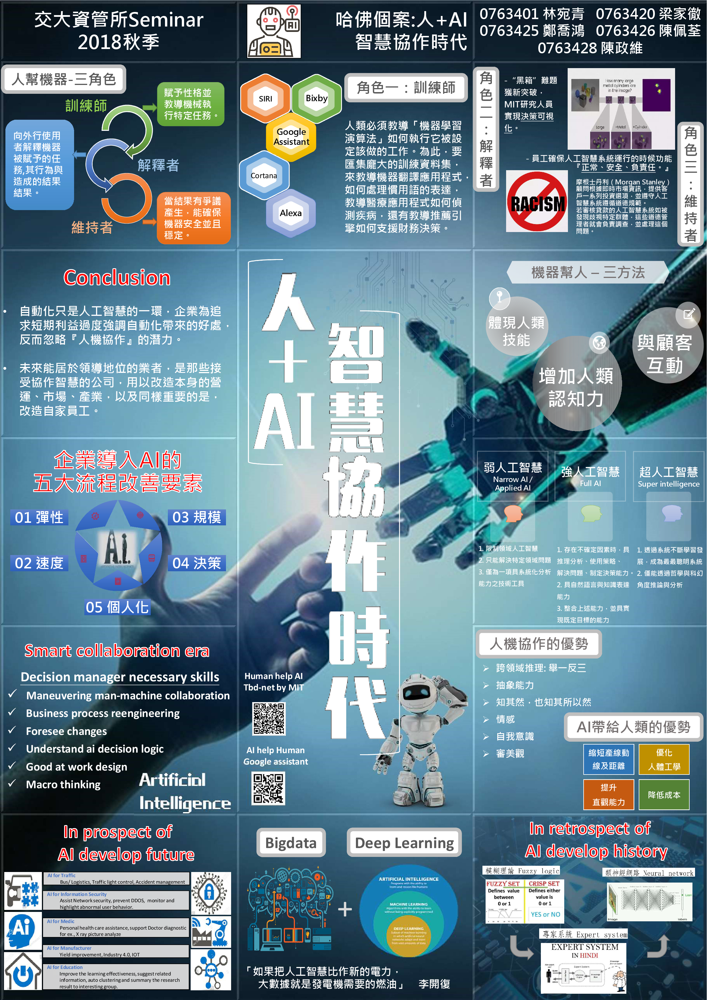

12
3
人+AI智慧協作時代
梁家徹、陳佩荃、陳政維、鄭喬鴻、林宛青
發表日期：2018/06

如果人工智慧持續進展，更多工作擁有自動化解決方案，未來會是怎麼樣的景象？樂觀一派認為，即使舊有工作遭人工智慧取代，在此同時，人工智慧也將創造更多全新型態的工作，帶動整體工作機會正成長；悲觀人士卻認為，對業主而言，勞工薪酬水準是以能完成工作的最低報價而定，大量廉價機器勞動力終將大幅壓縮勞工薪酬甚至完全剝奪工作機會。 惟經過研究，如果使用人工智慧主要是為了取代人力，就只能看到短期的生產力提升，人與機器共同工作時，公司績效的改善最顯著，結合人類與機器，將比單單聘雇專業人士或使用人工智慧機器更有效率。企業若要充分善用這種協作，除了要重新思考傳統的工作項目、還要改變企業文化、重新設計企業流程使，協助企業快速了解人工智慧浪潮帶來的商機與威脅。
- 人類與人工智慧最佳協作方式五大原則：
- 1.重新設想企業流程。
- 2.接納/實驗員工參與。
- 3.積極指導人工智慧策略。
- 4.負責任地收集資料。
- 5.重新設計工作，培養員工相關技能。
隨著製造業積極擁抱自動化技術，未來工作環境與流程將會朝 『人幫機器』、『機器幫人』兩種主要模式發展。
- 一. 人幫機器：
- (一) 訓練師：教導如何執行它被設定該做的工作，以及如何與人類進行互動。
- (二) 解釋者：向外行使用者解釋機械的行為，在以證據為基礎的產業格位重要。
- (三) 維持者：持續確保人工智慧系統運作時功能正常、安全、負責任。
- 二. 機器幫人：
- (一) 增強人類認知：適時提供資訊，以提升人類的分析、決策能力與創意。
- (二) 與員工、客戶互動：可以促進人與人的溝通，或是代表人類進行溝通。
- (三) 體現人類技能：人工智慧可能是實體機器人，增強人類工作者的能力。
自動化只是人工智慧的一環，企業為追求短期利益過度強調自動化帶來的好處，反而忽略『人機協作』的潛力。人工智慧可取代重複和單調的工作，讓人們有餘力從事其他活動，但人類與人工智慧的共生關係有更多細微差別，需要重新投資及再造，而非只是將既有做法加以自動化。總結來說，不要只用機器複製人類製造、決策的舊有經驗，反而應重新思考建構所有企業流程，分析檢視機器與人優、 劣勢並妥善利用，進而提升靈敏度，達成最大價值。

-
 Eddie May 3, 2015, 6:32 PM
Eddie May 3, 2015, 6:32 PM
Great job -
 Ipsum May 3, 2015, 6:32 PM
Ipsum May 3, 2015, 6:32 PM
Nice day~